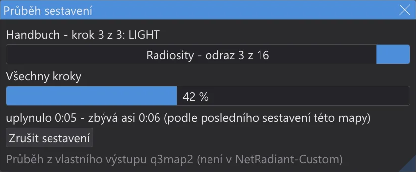
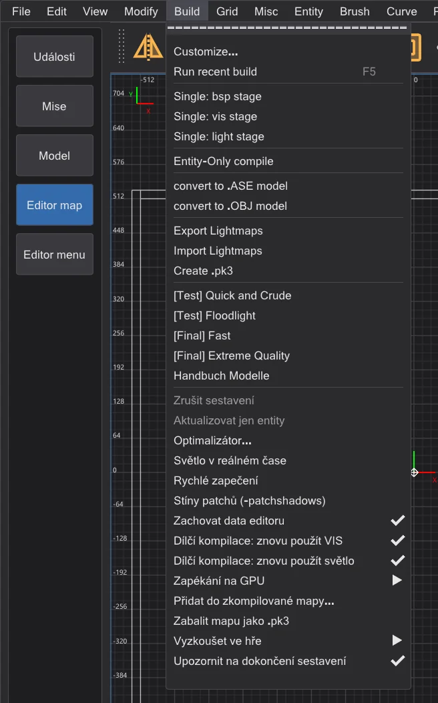
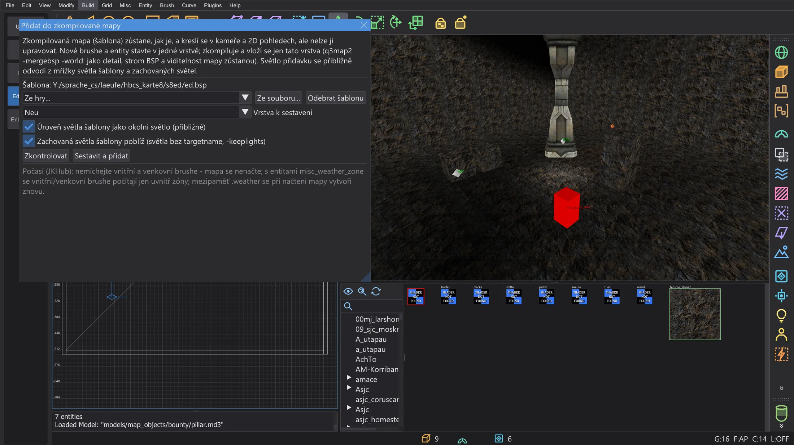
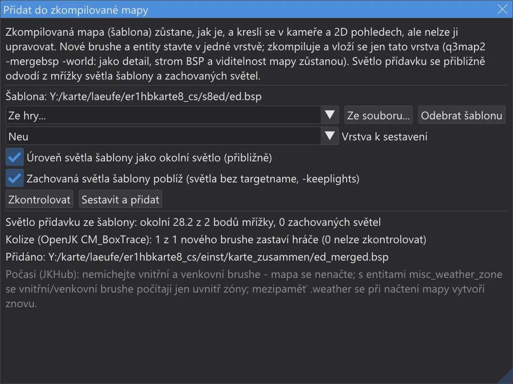

Editor map: průběh sestavení a dílčí kompilace
Podívejte se, jak daleko sestavení je a jak dlouho ještě potrvá, sestavte znovu jen to, co se změnilo - se stejným výsledkem jako úplné sestavení - a přidejte novou část do zkompilované mapy, aniž byste mapu znovu kompilovali.
Průběh sestavení#

- Zatímco běží sestavení z nabídky Build, okno Průběh sestavení ukazuje položku, krok a jeho fázi (BSP, VIS, LIGHT), fázi, ve které q3map2 je, s jejím vlastním průběhem - tečky a číslice, které q3map2 vypisuje, nebo odraz - pruh přes všechny kroky a čas.
- Zbývající čas: při prvním sestavení mapy s danou položkou se odhaduje z běžící fáze a ukazuje jako "nejméně". Od druhého sestavení pochází z časů posledního sestavení této mapy s touto položkou - časy kroků se uchovávají v
karte_bauzeiten.jsonve složce nastavení. - Plné VIS: před
-visbez-fastvypíše konzole portály, clustery a odhad paměti, kterou VIS potřebuje - načteno ze souboru portálů kroku BSP, spočítáno jako CreatePassages v q3map2. bhed_q3map2 si z každé pasáže ponechá jen tu část, která není prázdná (md_rev_TarisUpper2: 1,4 místo 9 GB), a po CreatePassages vypíše, kolik pasáže skutečně zabírají. Od počtu portálů z upozornění optimalizátoru na VIS, nebo když se paměť blíží tomu, co počítač má, následuje varování, i v okně: plné VIS může trvat hodiny, na otevřených mapách dny. Jeho průběh počítá očekávanou práci portálů, ne jejich počet - drahé přijdou nakonec -, takže zbývající čas je už při prvním sestavení blízko skutečnému. Východiska:-vis -fastpro zkušební sestavení, malé strukturální brushe, které neutěsňují, jako detail (optimalizátor: Dekorace jako strukturální) a Dílčí kompilace: znovu použít VIS pro pozdější sestavení. U mapy z File > Open .bsp se také uvede, zda byl originál sestaven s-vis -fast. - Build > Stejné VIS při každém sestavení (není v NetRadiant-Custom) (ve výchozím stavu vypnuto): s více vlákny může plné VIS vyjít mezi sestaveními mírně odlišně - jako u q3map2 z NetRadiant-Custom, kde portál použije ty ostatní portály, které jsou právě hotové; každý výsledek je platný. Po zapnutí dostane každý krok
-vispřepínač-bhedvisexacta bhed_q3map2 spočítá se všemi vlákny přesně to, co spočítá jedno vlákno, bajt po bajtu. Potřebujete to pro reprodukovatelná sestavení: stejná .map dá stejnou .bsp - k porovnání dvou sestavení, pro kontrolní součty nebo když stejnou mapu sestavuje více lidí. Čeká tam, kde portál potřebuje ještě nehotový portál - na uzavřených mapách zhruba stejně rychle, na otevřených mnohem pomaleji (duel_mos_espa: 5 místo 1,5 minuty). Vypnuto je rychlejší cesta. - Když je sestavení hotové, konzole vypíše čas každého kroku a porovná ho s posledním sestavením:
1 BSP: 0.4 s (poslední sestavení 0.5 s, -20 %). - Zrušit sestavení v okně zastaví q3map2, jako Build > Zrušit sestavení.
- Build > Upozornit na dokončení sestavení (ve výchozím stavu zapnuto): není-li JK Studio oknem v popředí, když sestavení skončí, jeho tlačítko na hlavním panelu zabliká - bez zvuku, bez dialogu.
Dílčí kompilace#

Dva přepínače v nabídce Build nechají každé sestavení znovu použít, co se od posledního nezměnilo. Výsledkem je bajt po bajtu .bsp úplného sestavení - ctest q3map2_teilbau sestavuje mapy oběma způsoby a porovnává soubory.
- Dílčí kompilace: znovu použít VIS:
-visběží s-bhedvisreuse. bhed_q3map2 uchovává viditelnost v<map>.bhedvisspolu se souborem portálů a přepínači. Jsou-li portály (.prt), přepínače a klíč vzdálené roviny (_farplanedist) stejné, viditelnost zkopíruje místo výpočtu - konzole hlásí visibility reused. Portály se mění jen se strukturálními brushi; entity, detailní brushe, patche a textury je nemění. - Dílčí kompilace: znovu použít světlo:
-lightběží s-bhedlightcache. bhed_q3map2 uchovává každou lightmapu a mřížku světla v<map>.bhedlights otiskem všeho, co do nich vstupuje - geometrie, světel, která na ně dosáhnou, přepínačů. Další běh spočítá jen lightmapy, jejichž otisk se změnil: posuňte jedno světlo a znovu se nasvětlí jen lightmapy, na které dosáhne. Konzole řekne, kolik jich přišlo z mezipaměti:light cache: 9 of 14 lightmaps …. - Změnilo se jen dodatečné zpracování -
-gamma,-exposure,-compensate,-saturation,-contrast,-gridscale,-gridambientscalenebo klíče worldspawn_minlight,_minvertexlight,_mingridlight: každá lightmapa i mřížka přijdou z mezipaměti, znovu běží jen dodatečné zpracování, bez trasování jediného paprsku.
-bounce se mezipaměť světla nepoužije: odražené světlo spojuje každou lightmapu s každou jinou. S více vlákny se může -vis sám mezi běhy mírně lišit (viz Editor map: rychlost a světlo v reálném čase); znovu použitá viditelnost je ta z posledního běhu - pro porovnání s úplným sestavením použijte -vis -threads 1. Soubory mezipaměti leží vedle mapy; smažte je a vynutíte úplné sestavení. Do .pk3 nepatří.Přidání do zkompilované mapy#

- 1
Otevřete zdrojovou mapu, ve které přídavek stavíte - nebo novou mapu - a zvolte Build > Přidat do zkompilované mapy. Jako šablonu vezměte mapu hry (Ze hry) nebo libovolný .bsp (Ze souboru). Kreslí se v kameře a 2D pohledech a nelze ji vybrat ani změnit.
- 2
Postavte přídavek - brushe, patche, entity - ve vlastní vrstvě a vyberte ji pod Vrstva k sestavení (aktuální vrstva je předvybraná).
- 3
Zkontrolovat sestaví vrstvu a provede kontroly níže, aniž by cokoli přidal. Sestavit a přidat sestaví vrstvu (
-meta,-light -fast -samples 2) a vloží ji pomocíq3map2 -mergebsp -world -fixnames: jako detail do světa šablony, jejíž strom BSP, viditelnost a lightmapy zůstanou. Výsledkem je<template>_merged.bspve složcekarte_zusammenve složce nastavení; samotná šablona se nemění.

Co se kontroluje
- Brushe počasí:
system/insideasystem/outsidese nesmí míchat - po sloučení se mapa s oběma nenačte. Pokud by se tak stalo, nic se nepřidá. - Zóny počasí: má-li šablona nebo přídavek entity
misc_weather_zone, vnitřní a venkovní brushe se počítají jen uvnitř zóny; brushe počasí přídavku mimo všechny zóny dostanou varování, protože nemají účinek. - Názvy:
targetnebotargetnamepřídavku, který používá i šablona, přejmenuje-fixnames- vazby mezi šablonou a přídavkem se ztratí. Dialog tyto názvy vypíše. - Limity: sloučený .bsp se počítá jako v optimalizátoru; limit přes maximum je chyba.
- Kolize: sloučený .bsp se načte do kolizního modelu hry (OpenJK
CM_BoxTrace, převedeno); každý nový pevný brush musí zastavit krabici hráče, když do něj vejde zvenku.
-keeplights). Mřížka světla šablony se neaktualizuje - modely a hráči u přídavku jsou nasvětleni jako dřív. Pro konečnou mapu vše sestavte celé..weather vytvoří při načtení mapy znovu, takže starý není třeba mazat.